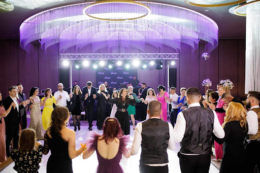
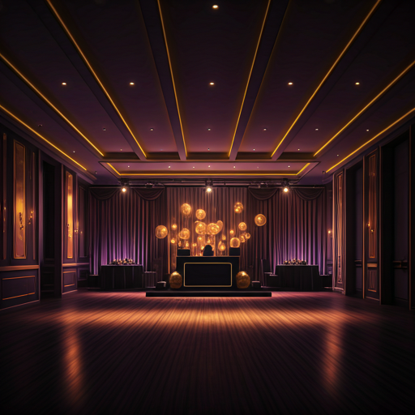

Formație Nuntă București & Muzică Evenimente Premium
Program live complet — de la folclor autentic la cover-uri internaționale — cu formația Grand Music Events.
Servicii Muzicale Ioana Balan
Muzică Populară de Petrecere & Folclor Autentic
Aducem spiritul autentic românesc la nunta dumneavoastră. Specializați în repertoriu bogat pentru evenimente din București, Ilfov, Ploiești, Brașov și Craiova.
- Muzică Populară București
- Folclor Muntenia
- Cântece de Păhărel
Cover Band & Muzică Ușoară
Repertoriu internațional vast: Pop, Jazz, Retro și hituri actuale. Eleganță și versatilitate.

DJ Nuntă & MC Profesionist
Sincronizare perfectă între momentele live și seturile DJ-ului. MC experimentat pentru un program fără cusur.
Muzică Live 100%
Transparență totală. Performanță vocală live documentată în format 4K. Vedeți cum cântăm înainte de a rezerva.
Video Live 4KConsultant Evenimente
Peste 15 ani de experiență. Vă ajutăm să structurați playlist-ul ideal pentru un eveniment premium reușit.
Repertoriu Variat pentru Nunți
Stăpânim arta adaptării muzicale. Oferim un mix sonor care să mulțumească toate gusturile, de la muzică de petrecere la hituri disco și latino.

Disponibilitate Formație Nuntă
Contactați Formația Ioana Balan
Calendarul pentru sezonul 2026–2027 se completează rapid. Solicitați acum o ofertă personalizată.